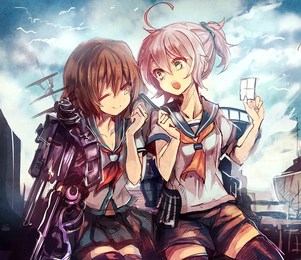

家中小记
+ 空轨
+ 空轨 日常 CLANNAD LWA 自新世界
+ 手机
+ 行动力
昨天和煜昂聊天，聊了伊苏，轨迹和动漫。感触还是蛮多。回想自己的高中生活，也许是给自己太多压力却不行动，积极地逃避现实，身在福中不知福。
空轨给我的感动一直没有变过。自从初中接触到了这部作品，初二开始玩FC，初三一直玩到了SC。她的剧情，音乐和设定一直深深打动着我。昨天又去听了空轨的OST，音乐中蕴含着的气势，昂扬和希望，以及其他的说不清的情感，让我一遍遍回想起了剧情中的种种。
同时也回想起来，当初中考的失利。究竟是因为状态，不努力，还是什么原因？至今也没有明白。是否有受空轨的影响？但是认识这部作品我并不后悔。如果当时能够忍住到考后再玩，如今的处境，经历是否会截然不同？但是一切都没有如果。这条路便已如此走过来了。也许，这也是石头门所要反映的另一个侧面吧。
ACG的作品总能给我带来诸多的震撼和感动。轻松搞笑的 「日常」 ；讲诉亲情友情的 CLANNAD 和 LWA ；引人深思，刷新世界观的 自新世界，石头门，魔圆；等等等等。初中时候喜欢 CLANNAD, KANNON, Air, Angle Best! , 轨迹，喜欢他们的温暖和感动。高中时喜欢自新世界，石头门，喜欢他们的哲思。而现在，喜欢的类型则更加广泛，魔圆的羁绊，LWA的坚持与信念， ヨスガノソラ 的艺术与现实的冲突，黑契的理想和信仰，超磁电炮的热血，不可胜数。对于游戏，亦是如此。
记得曾经看到过一个帖子，是说 KanColle 为何会火的。看完了那个帖子，我便义无反顾地入了舰c坑。一开始买的岛风GO账号，随后自己搭ss，再是氪船位。也许，这其中便是真正的情怀。
最近面临着换手机的世界难题。我其实自己是比较想买三星s8+的，或者是苹果。但是又想入苹果平板。所以自己大概是想买三星s8+。不过妈妈爸爸总是劝我买华为手机。我不太喜欢那类手机其实还是有各种原因的。但是总觉难以推脱。大概这就是我的弱点之一。对于亲近的人，总是难以拒绝。难以表达自己的看法。其实大胆说出自己看法又何妨？即便是此前讨论的留学。最糟糕的不过是吵吵架。我总是关前顾后顾虑过多。吵架也许并非无益。至少每个人可以真实地表露自己的想法和观点。
最后是行动力的问题。最近受到的刺激不少。明明知道自己努力还不够，却又总是在逃避中一天拖过一天。也许人和人的差别，智力并非最主要的因素，最重要的还是信念和坚持。
送给自己一句话，也许可以成为自己的座右铭：
『行动起来可以翻天覆地，但大多数人却都不愿行动。总想着一鸣惊人，却又无动于衷，最后便落个碌碌无为。』